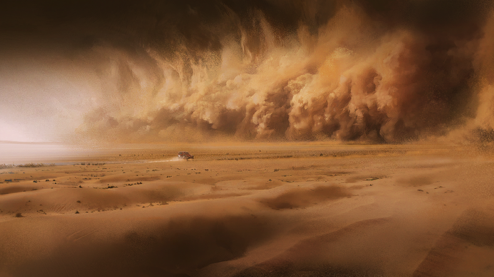

信写到这里，感觉也应该要结束了。好像一直是我自己在说些不着边际的话......真的非常抱歉。
我希望这封信能顺利寄到你手里，但好像又希望......这封信就这样消失在信使和信使的传递之中，不要被任何人看见。
但我还是决定把它寄出去，寄给你。希望你能收到这封信，这至少说明你一切都好。
祝你一切顺利。
爱你的安洁莉娜

安洁莉娜
呼叫大铁屯塔台，呼叫大铁屯塔台！这里是安洁莉娜！请确认我和大铁屯的相对位置！
塔台
这里是塔台，你们正在持续往东南方向移动，目前正处于沙暴区边缘，和大铁屯的相对位置是——滋滋......
阿梅利亚
信号越来越不稳定了......
安洁莉娜
塔台，再确认一次，我们现在和大铁屯距离多远？
塔台
安洁——滋滋......距离大铁屯二十公里！你们面前沙暴......滋滋......七公里左右！只是预估数据，沙暴范围随时可能变动......
安洁莉娜
塔台——
塔台
......滋滋......滋滋......
塔台
......通过！快速通过！源石浓度正在上升——滋滋——活性源石潮从东偏南方向——滋滋——
塔妮
活性源石潮？！
安洁莉娜
塔台，请求确认活性源石潮到达时间！
安洁莉娜
请求确认活性源石潮到达时间！
塔妮
塔台的连接断了？！
阿梅利亚
糟糕......再稳定的系统也禁不起活性源石潮的干扰啊！
安洁莉娜
......阿梅利亚，麻烦看看车上的源石浓度检测系统！
阿梅利亚
......按雷姆必拓标准，比安全阈值低四分之一左右！
安洁莉娜
也就是说已经超过罗德岛的安全标准了！各位——
塔妮
——安洁，不许搞征求意见那一套！没人想走回头路！
安洁莉娜
我有说过要走回头路吗？
安洁莉娜
我是说，请各位做好防护准备，我要加速了！
安洁莉娜
塔妮，竖起耳朵，不要放过任何可疑的声音！
塔妮
交给我！
安洁莉娜
阿梅利亚，虽然有点可惜，麻烦你再放飞两只“小飞虫”，随时报告周围的异常情况！
阿梅利亚
好、好的！
安洁莉娜
嘉辛塔，如果不晕车，麻烦帮我观察我们身后的情况！
嘉辛塔
这种生死攸关的场合谁要晕车啊！
安洁莉娜
那我要加速了——
塔妮
等等，我听见有什么在车窗外......
塔妮
是一撮毛......不对，是有袋鼷兽？！
塔妮
它怎么在跟着我们，难道我们之前真的遇见过它——不，难道我们一路遇见的都是它？
嘉辛塔
它为什么在这个当口现身？！
阿梅利亚
这、这、这种时候还要偷我想说的话吗？！
嘉辛塔＆阿梅利亚
......
塔妮
安洁，有袋鼷兽飞得好像很吃力的样子......而且好像也在往南飞！怎么办？
安洁莉娜
不管怎么说，趁活性源石浓度还没太高，得让它进车里来！
其余三个人纷纷点头。
安洁莉娜一手稳住方向，一手摇下车窗，和风暴中挣扎的小小生物对了一个眼神。
有袋鼷兽
叽......？
安洁莉娜
进来吧，小家伙！
有袋鼷兽
叽叽！
和小生物进入车厢几乎同时，安洁莉娜关紧车窗，两手紧紧握住方向盘。施术单元在她身侧微微发光。
塔妮
辛苦你了，一撮毛......
嘉辛塔
欸？它叫一撮毛吗？
塔妮
可你看它头上那一撮毛，真的很显眼......安洁，你觉得呢？
安洁莉娜
有袋鼷兽头顶的绒毛不是被那个勇敢的雷姆必拓人打了一下之后长出来的吗？
塔妮
哦，你说那个故事？
安洁莉娜
如果真是这样，所有的有袋鼷兽头顶应该都有毛，管它叫一撮毛和给驮兽起名叫大眼睛也没什么区别了吧。
塔妮
......我不管！它就叫一撮毛好不好！
安洁莉娜
如果你非要坚持，那也不是不行......
安洁莉娜
......因为这次我们真的要加速了！
塔妮&嘉辛塔&阿梅利亚
哇啊啊啊啊啊啊啊啊啊！
一撮毛
叽叽叽叽叽叽叽？！
嘉辛塔
咳、咳！安洁，外面已经什么都看不清了......
阿梅利亚
放飞的“小飞虫”已经全部失联......需要我再放一批吗？
安洁莉娜
塔妮，你那边呢，有没有听见什么不一样的声音？
塔妮
听不见！风沙声太响了，其他的我什么都——
塔妮
......？
安洁莉娜
塔妮？
塔妮
我在听......是不一样的声音，是......
安洁莉娜
车打滑了？！
塔妮
是水！
嘉辛塔＆阿梅利亚
水？！
安洁莉娜
是的，是水，车轮正在打滑！路面突然变得光滑了！
塔妮
风沙声停了！是、是——！
塔妮组织语言的当口，车子终于穿破了最后的阻隔。此前从未想象过的景色在她们眼前延伸开来。
车里的四个人好一会儿说不出话。
直到有袋鼷兽兴奋地叫起来，安洁莉娜才如梦初醒，缓缓将车停下，打开车门。
看着眼前的景象，她陷入短暂的失语之中。
在原地站了好一会儿之后，她选择张开双臂，迎接纯净的风。

塔妮
这就是......南境......？

塔妮
雨季过后澄澈的天空，地面镜子一样的积水，晶体中间探出头的小花......
塔妮
和奶奶说的一模一样！所以我真的到了，这里就是......
塔妮下意识地用脚轻拍地面，不是因为急躁，而是不知该如何抒发胸中的思绪。
轻盈的水花在她脚下绽开，打湿了她的鞋尖。潮湿的凉意让她打了个激灵。
她忽然猛地一跺脚。
卡特斯逆着风，但她分明觉得自己的声音传了很远很远——

安洁莉娜
我们到了——

安洁莉娜
我们终于到了——
刚刚还神经紧绷，此刻的呼喊让沃尔珀略微觉得有些缺氧。
她知道自己正在眩晕，双脚也站不稳，但此时她宁愿相信，这是大地正在邀她跳一支轻巧的舞。
于是她连着转了几个圈，放任眩晕让自己失去重心，一跤坐倒在水中。
安洁莉娜
呼啊......
她看向嘉辛塔和阿梅利亚，两人也被眼前的景象震撼，久久不能说出话来。

嘉辛塔
我......我没想过这里居然是这样......

嘉辛塔
和我去过的任何地方都不一样，像一面映照着天空的镜子......

嘉辛塔
阿梅，我——
阿梅利亚的脸因兴奋而涨得通红。
听见嘉辛塔的话，阿梅利亚把头转向她的方向，和她对上眼神。
嘉辛塔
我......

阿梅利亚
......
安洁莉娜
好了好了，阿梅利亚，你不是还有设备想在南境测试吗？

阿梅利亚
我自己的设备随时都能测试，倒是没什么关系，但根据“小飞虫”的探测，南境现在并没有信号源......

安洁莉娜
你的意思是说，罗德岛的设备也坏掉了？
阿梅利亚
是的......
阿梅利亚
按说这种设备在远程通讯系统修好后就该自动连接上的，就算连不上，也应该隔一段时间就重连一次，不该连信号都没有。
阿梅利亚
现在还没连上，说明设备本身可能也在断连时出了问题......
嘉辛塔
对哦！这里明明就没有通讯塔，为什么罗德岛的设备能连上远程通讯系统？
阿梅利亚
罗德岛的设备上应该有一个专门的大功率发射装置，单向把数据传输到大铁屯的通讯塔——

阿梅利亚
但我在纵贯的时候不负责客制化设备的维护——说不定连客制化设备都不是，是罗德岛自己开发的设备......我没信心修好啊！
安洁莉娜
——没关系！我可以直接把存储数据的硬盘带回大涌泉镇解密的。

塔妮
等等，我光顾着高兴了......南境就是旅途的尽头了呀！
安洁莉娜
......所以？

塔妮
所以这种水平如镜的地方......不是一眼就看出有没有怀表了吗？
几人纷纷四处张望，几乎没有起伏的地面上空无一物。

塔妮
茴香......烤防风根？防风根是什么？
伊娜拉
那是格林梅多自治州盛产的蔬菜，和胡萝卜长得很像，但味道完全不同。
塔妮
大涌泉镇有卖吗？有的话我买回来，明天让妈妈做？
伊娜拉
哈哈，不用啦，我的小珊比。奶奶喝点胡萝卜汤就足够了。
塔妮
奶奶，所以你的怀表有没有可能其实丢在格林梅多？
伊娜拉
去格林梅多时，奶奶脸上的皱纹还没有去南境时一半多呢。

塔妮
唔......可南境好远啊。
塔妮
想要变得像奶奶这么厉害，不跑一趟南境真的不行吗......

塔妮
不对不对，奶奶，你是不是说过，怀表不一定是丢在南境了，也可能是落在零号公路上的什么地方了？
伊娜拉
......
伊娜拉
是呀。
塔妮
......也许我就算拿到怀表，也成不了像奶奶一样的源石技艺大师？
塔妮
她只是为了不让我失望，所以才一直跟我说......怀表一定躺在从大涌泉镇到南境中间的某个地方，等着我去发现？
塔妮
......
塔妮
......！
塔妮
安洁、嘉辛塔、阿梅，快看，这里是......
塔妮
是海！是大海！
安洁莉娜
海......？
安洁莉娜
南境的尽头......是海？
她在地上摊开雷姆必拓地图，这才发现，这里并非南境的尽头，但自己的确已经来到了雷姆必拓东南巨大的峡湾面前。
结晶不再平坦，变得崎岖不平。落差中间显示出令人目眩的精细纹理，直到结晶在海的开端处断裂，成为陡峭的崖壁。
更远处，阳光倾泻在冷色调的海面上，宣告着大地已至尽头，为视野中的一切镀上一层不真实的光晕。
正是风平浪静的时刻，和缓的浪花轻抚崖壁，浪声宛如每个人梦中都曾听过的轻柔呼唤。
塔妮
......奶奶从来没说过南境还有这样的地方。
嘉辛塔
别气馁，也许她只是忘记告诉你了——

塔妮
不，我不是那个意思。
塔妮用手搭在眼前，望着被海雾蒙上一层面纱的太阳。

塔妮
只是现在，只是此时此地，我忽然觉得......

塔妮
......就算找不到怀表，这里仍然很美，我仍然走过了一趟很好很好的旅程。
安洁莉娜
嗯。
阿梅利亚
好冷！
塔妮
确实好冷！好想长出一撮毛那样厚厚的毛啊......它还好吗？
安洁莉娜
应该是刚刚在沙暴中用尽了力气，又在车里受了惊吓，一直都在我肩上睡觉。
安洁莉娜
我刚刚还怕倒在水里的时候把它浸湿呢，看来是没关系......
安洁莉娜
......嗯？
塔妮
怎么了？

安洁莉娜
你看崖壁边上......是不是有个小东西正在发亮？
塔妮
......
塔妮
......真的！
崖壁边上，不知什么东西正在阳光的照射下闪闪发光。
塔妮
难道......难道奶奶真的把她的怀表......丢在了这里？
塔妮如同在梦中一般，摇摇晃晃地朝着崖边那点剔透的反光走去。
安洁莉娜想叫住她，但那毕竟是塔妮一路以来的愿望，所以安洁莉娜只是小心翼翼地跟在塔妮身后。
塔妮
好漂亮的闪光......
那点晶莹的光就在那里一动不动，仿佛正等待着塔妮前来唤醒一般。

塔妮
......？
塔妮
不对，不是怀表，是......有袋鼷兽的眼睛？
嘉辛塔
还有更多——这里有好多有袋鼷兽！
阿梅利亚
毛茸茸的......好可爱......
岩壁后、礁石下、结晶旁......四人此前并未注意到的地方，有袋鼷兽纷纷露出身形。
它们的袋中有的装着野果，有的装着花草，也有一些装着亮晶晶的小物件，仿佛真的要将这些送至某处一般。
嘉辛塔
它们是来欢迎我们的？
安洁莉娜
仔细想想，它们迎接的应该是一撮毛吧。
安洁莉娜
如果进大涌泉镇之前是一撮毛弄松了我绑的行李，那它也赶了很远的路，才回到了家呀。
安洁莉娜
一撮毛，我们回家了呢——嗯？

一撮毛
（畏惧的嘶嘶声）
不知为何，一撮毛看起来并不放松，反而畏缩起来，直往安洁莉娜的背后躲。
与此同时，毛茸茸的生物们也朝着四人的方向飞了过来——

安洁莉娜
我的车钥匙！

塔妮
我的喷雾罐！
嘉辛塔
这......这这这，阿梅利亚，你刚刚是不是还有话要对我说？要不你现在说说看？

阿梅利亚
这种时候怎么可能想得起来啦啊啊啊——

塔妮
难道传说是真的，它们真要把我们的话全偷走吗？！
“怎么可能啊！”
一边在心里这样否认，一边又为此惴惴不安。
行至大地尽头的她们举起手里称得上武器的东西，准备夺回那些还未讲完的故事。